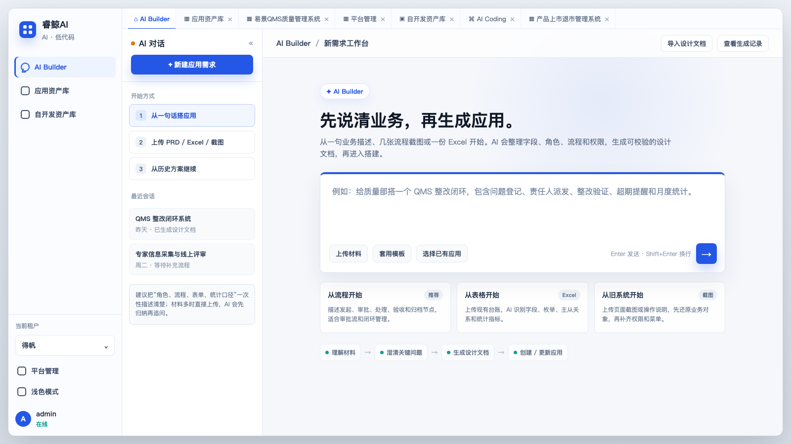
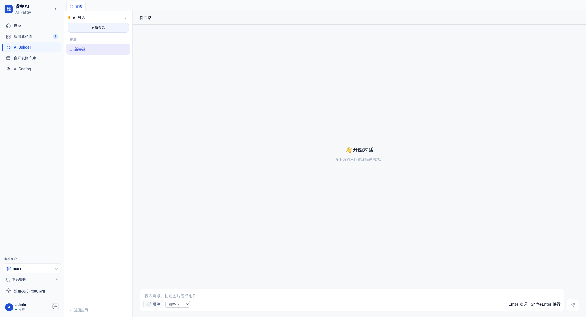

AI 对话：把零散需求变成标准文档
支持 Chat 和 Cowork 两种模式。可上传 PDF、Word、Excel、图片和 Markdown，AI 并行阅读资料、提出澄清问题，并生成可交给 Builder 的设计文档。
- 右侧设计文档面板支持版本切换、原文与渲染预览
- inline 卡片可一键跳转到 AI 搭建

Positioning
系统以自然语言和文档作为入口，以 aPaaS 平台能力作为落点，让业务人员、实施顾问和开发人员在同一条链路上协作。
对业务人员：可以从一句想法、一批附件或一份 PRD 开始，让 AI 追问、整理并产出标准设计文档。
对实施顾问：可以把文档交给 AI 搭建模块，生成应用草稿，再通过对话调整模型、表单、流程、权限和字典。
对开发人员：可以用 AI 编码补齐低代码覆盖不到的组件、页面、接口，也可以用 Vibe Coding 在隔离沙箱里开发完整 Web 应用。
对管理者：可以通过 DevOps 把应用变更纳入提案、审批、Apply、Git 和环境发布流程，避免“谁改了什么”不可追踪。
Capabilities
每个能力都不是孤立页面，而是围绕“应用从需求到上线再到维护”的生命周期组织。
支持 Chat 和 Cowork 两种模式。可上传 PDF、Word、Excel、图片和 Markdown，AI 并行阅读资料、提出澄清问题，并生成可交给 Builder 的设计文档。
从应用列表进入编辑页，左侧嵌入 dolphin AI 助手，右侧实时展示 SPEC。助手可调用 8 个 MCP 工具读取应用、解析文档、生成应用、更新变更计划并发布上线。
面向自开发组件、页面、接口和脚本。AI 在 df-apaas-cli 模板工作区里读规范、写代码、运行检查，最后打包上传到 aPaaS 平台。
适合完整 Vue + Express 应用。每个工作区一个 Docker 或 Podman 沙箱，AI 使用文件读写、命令运行、搜索和计划工具完成开发。
已上线应用的 SPEC 变更走 ChangeProposal 流程，支持校验报告、变更计划、可逆性标记、审批中心、Apply 历史、Git 分支和环境拓扑。
设置页集中管理 LLM、得帆云平台环境、租户成员；应用级支持 owner、maintainer、contributor、viewer 四类协作角色。
Workflow
产品把不同用户的入口分清楚：有想法、已有材料、已有应用、要写扩展、要做独立应用，都能进入合适的工作流。
Modules
左侧导航和关键路由围绕实际工作场景组织，用户不用先理解底层平台概念，也能完成任务。

首页复用 AIChatPage，承接新建需求、历史会话、Chat / Cowork 模式与文档产出。
合并展示 local、linked、remote 应用，支持打开编辑、跳平台、部署、成员管理和删除草稿。
左栏 dolphin 助手负责变更，右栏只读 SPEC 视图负责展示应用信息、角色、字典、模型、表单、流程和权限。
一个面向 aPaaS 扩展包，一个面向完整 Web 应用；都提供对话、IDE 和运行/上传闭环。
DevOps 管提案审批、Apply、Git、环境拓扑；设置页管 LLM、平台环境、租户成员和命令面板入口。
Architecture
当前项目不是静态 Demo，已经具备前端工作台、FastAPI 后端、结构化 SPEC、Dolphin / MCP 工具桥、Git 与容器沙箱等关键能力。
Vue 3、TypeScript、Vite、Element Plus、Pinia 和 Vue Router，覆盖首页、应用、对话、编码、DevOps、设置等页面。
FastAPI、SQLAlchemy async、Pydantic v2、SSE 流式响应和 JWT 认证，承接 AI 对话、应用、SPEC、DevOps 与配置管理。
支持多模型配置，AI 搭建通过 dolphin Agent 和 MCP 工具操作应用；Vibe Coding 通过 Agent loop 在沙箱内读写文件并执行命令。
支持 Docker / Podman 部署、Kubernetes 配置、code-server IDE、Vibe 沙箱预览、Git 仓库同步与得帆云平台环境连接。
Value
睿鲸 AI 把“需求文档、低代码配置、代码开发、审批发布”放到同一张工作台里，让企业应用可以被 AI 搭建，也可以被 AI 持续维护。